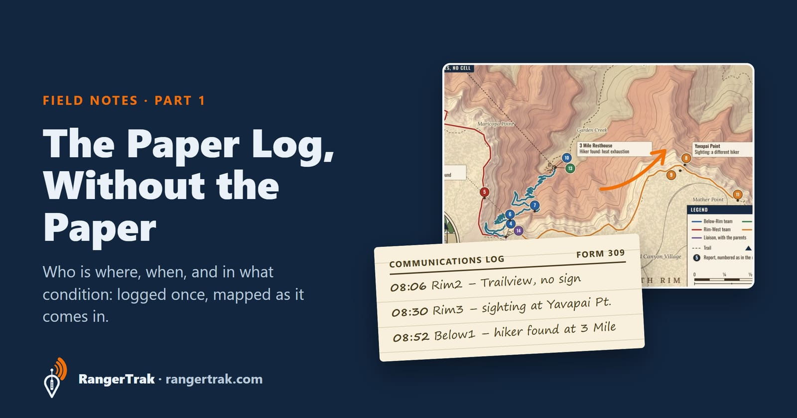

Field Notes · Part 1
The Paper Log, Without the Paper

RangerTrak is a free, open-source radio log and map for the scribe at a CERT, ACS/ARES, SAR or wildland-fire command post. Log who, where, when and what off the radio; it maps them. It works offline once set up, and prints the Form 309 Communications Log and the ICS-213. It’s AGPL and will stay free. Try it at rangertrak.org, no account or install needed.
I built this, and this series is me showing it to you and asking for your help. It’s still being developed: it works, it’s used, and it has rough edges. I’d rather you hear about those from me than find them mid-exercise.

Picture the command post an hour into a CERT callout. The radio says, “Team 4, we're at the corner of Vashon Highway and 188th, two residents checked, all clear.” Someone at the table writes it down: time, who, where, what. Twenty minutes later the Incident Commander asks where Team 4 was last seen, and that person flips back through three pages of handwriting to find out.
That scribe is who I built RangerTrak for. It records who is where, when, and in what condition, plots each report on a map as it's entered, and keeps the record for the after-action report. The field teams never touch it. They're a voice on the radio, same as always.
Why not a spreadsheet, or one of the big platforms?
Because of the one assumption almost every tool makes: that there's a working internet connection. For a lot of the incidents a CERT, ACS/ARES or SAR team gets called to, that's exactly what's gone. That's often why the radios are out in the first place.
So RangerTrak is built the other way around:
- No server, no account, no login. It runs in the browser on the laptop or tablet in front of you, and what you type stays on that device.
- No internet needed once it's set up. Entering reports, the roster, the log and coordinate conversion all work with the network gone. How to get a device into that state is the whole subject of the next post.
- No API key, ever, for the core job. Nothing to sign up for before a callout and nothing that expires in the middle of one.
- Free and open source. Copy it, change it, keep running it — it can't be taken away.
Built around the four questions

Every radio check-in answers the same four questions: who is reporting, where they are, when, and what they said. The entry screen asks them in that order, and Tab moves through them the way the call arrives, so a whole report can be typed without touching the mouse.
Positions go in however the team reads them out: latitude/longitude in any of the three usual styles, MGRS, UTM, Maidenhead grid squares, Plus Codes, or a street address. RangerTrak converts between all of them on the device, and a small map beside the form shows where the report landed. If the pin is in the water, you re-read the coordinates back before the team moves on. Post 3 is about exactly that.
From there the reports show up on a map, with each ranger or team in their own color and a trail showing where they've been. They also go into the Radio Log, which you can sort, filter, correct and export, and which prints as a 309 communications log communications log. A report can also produce an ICS-213 message that prints onto FEMA's own form. Part 4 covers both.

Try it in ten minutes
- Open rangertrak.org on a laptop or tablet. Any modern browser works, and there's nothing to install yet.
- On a first visit, a welcome panel sits above the form. Pick a Scenario: the Grand Canyon's South Rim (the default), Vashon Island, a state fair, or Near me, which builds one around where you are. Then press Load Demo Data. (If you've been here before, use Mission → Danger zone, choose a Demo scenario and press Load sample mission. That one replaces whatever is on the device.) You now have a demonstration roster with four field teams, two search objectives, and a few dozen reports and messages.
- Open Map. Click a cluster to spread it out, and follow one ranger's trail.
- Open Radio Log. Sort by time, fix a typo in a cell (edits save themselves), and filter to one callsign.
- Back on the entry screen, log a report of your own the way your net would send it, in whatever coordinate format your team actually uses. Time yourself.
Rather be led through it? Module 2 of the RangerTrak Tour Guide, Your first radio call, walks you through it hands-on. New to RangerTrak? Start the tour.
Nothing here leaves your device. To start clean afterwards, use a different browser, or Mission → Danger zone → Reset mission to defaults.
What it doesn't do yet
- It shows you a quiet team, but it won't interrupt you. Set your mission's expected check-in interval and the map, the roster and the Radio Log all shade a team's elapsed time from green through amber to red as they fall behind it. Nothing beeps or pops up, though — someone has to be looking — and the times refresh when the screen redraws rather than ticking second by second.
- Detailed offline maps need a little preparation. The built-in offline map shows the whole world at low detail, plus street detail for a demo mission while it’s loaded. For street detail in your own area, save it on the street map before heading out, or load a map file for it. Part 2 and the Field Guide show how.
- It's English-only, and the ICS forms are the US versions. The coordinate formats work anywhere, but if you're outside the US I especially want to hear what your forms and grids look like.
Tell me
This is the part that actually matters. After you've spent ten minutes with it:
- Does this match how your net really logs traffic? What's on your paper log or spreadsheet that isn't here?
- What slowed you down while logging that report yourself?
- Would you try it at your next tabletop or exercise? A small tabletop is fine. I'm glad to help set one up, and I'd like to write up how it goes (with your permission) later in this series.
Three ways to reach me, and none of them needs a GitHub account:
- The feedback form on this site. Start with “Blog 1” so I know where you came from.
- In the app itself: Help → feedback.
- Email: RangerTrak [at] steadyeoc [dot] com
Short answers are welcome. “I tried it, got lost at step 3” is useful.
The series
- The Paper Log, Without the Paper (this post)
- Hot, Warm, Cold: getting a device ready before the network goes
- However They Read It Out: coordinates and maps
- From Radio Log to Form 309 and ICS-213
- More Than One Laptop
- What’s Missing, and Who Decides
- Your Roster Is Already in a Spreadsheet
- Shift Change: Op Periods, Scribes and Laptops
- After the Mission: Summaries, AAR and the Final Report
- Field Phones, Up Close
- RangerView
- People, Teams and Places: help me get this right
Next: Hot, Warm, Cold. The five minutes of preparation that separate a working tool from a blank screen when the network goes down. You'll need a device you can put in airplane mode.